Laser cutting is a technique that is used to cut pieces with a laser beam that focuses on a point, this point moves to carry out the cutting process by thermal separation generated by the tubes it has, on this occasion we will work with a GCC MG380 Hybrid laser cutter.
Let's go learn more about this machine.
GCC MG380 Hybrid laser cutter:
STEP 1: First let's get to know and identify the equipment.
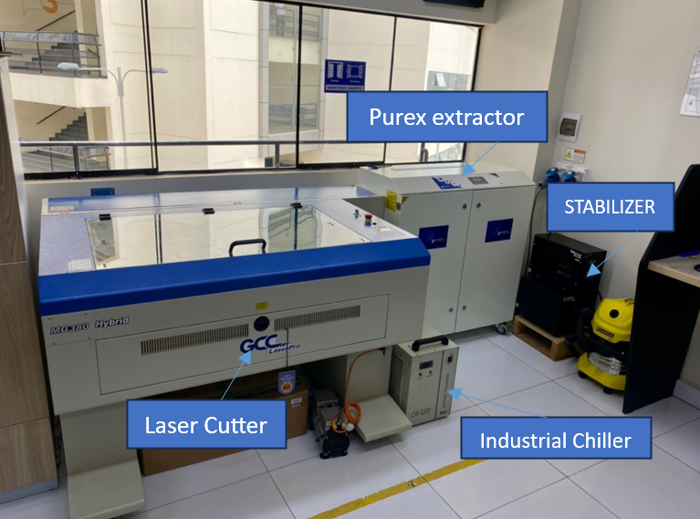STEP 2: Before starting work, we must identify the following elements: fire extinguisher and first aid kit, as well as safety protocols. Remember, our safety comes first.
The focal length is very important for the performance of the equipment, it is necessary to correct it in each job through the autofocus pin.
We will estimate the notches, for this we will design a square, rectangle and a 15 mm circle, and we will cut them out of 3 mm MDF, but with different cutting parameters.
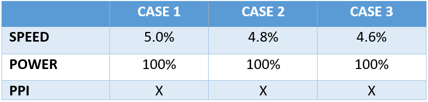In the first case, the laser did not cut the rectangle or the circle, but it was able to cut the square, in the second case it was able to cut both figures except the circle and in the third case all the figures were cut.
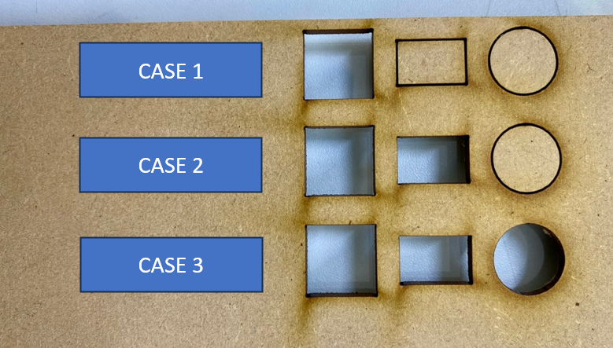We write down and save the cutting parameters of the third case as a cutting reference for 3mm MDF. Then we measure with a vernier, the square and the hole.
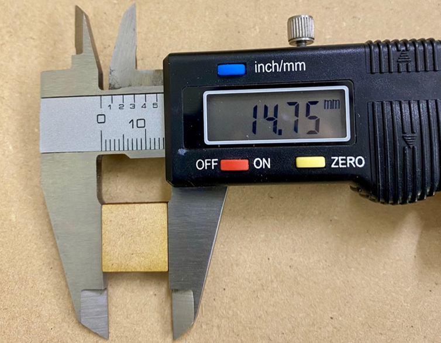Subtract and divide by two, in my case it’s: (15.30-14.75)/2 = 0.275mm, I used these measurements to draw the estimate for the notches.
Press fit notch:
Now we have to design our joint test. Corel Draw was used to make the design, for several reasons, first, to handle text and numbering, second, it is more practical to handle parametric figures and third, the cutter works with this software.
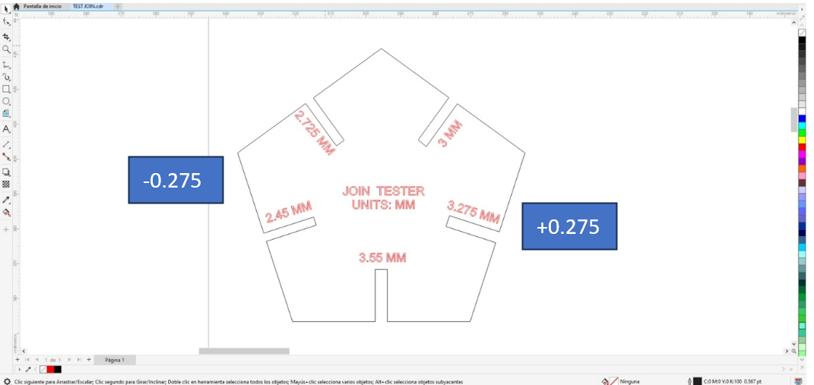We used two colors, the red color to cut and the black to rasterize.
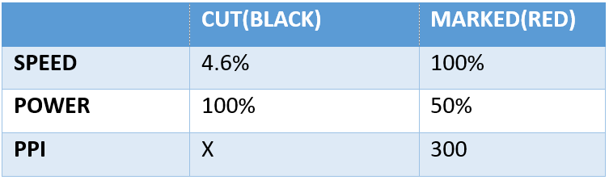The marked speed value was a value already worked on previously, later we will see how it affects the speed.
Well!, now I explain to me how is the whole process of laser cutting.
STEP 1: First, we select our design, and press ctrl + P or look for the print option, then, we go to the preferences section.
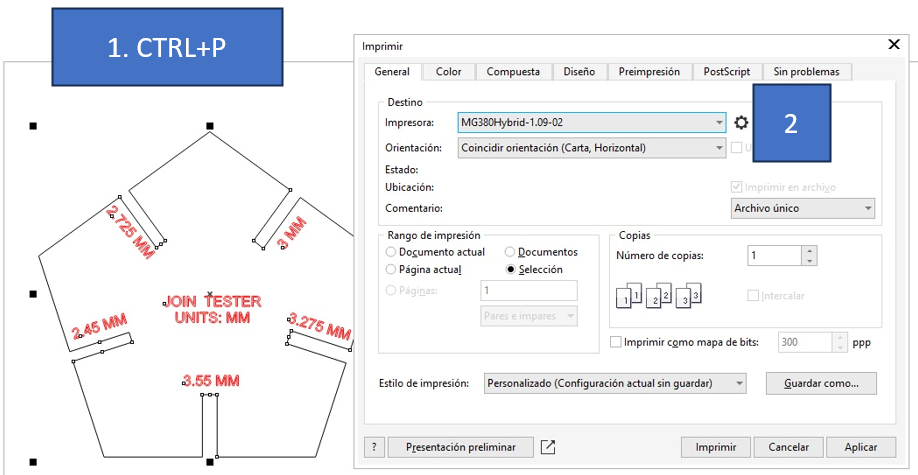Then, we look for the PEN option, and according to the colors we use in the design, we enter the parameters, remember red is for marked and black for cut.
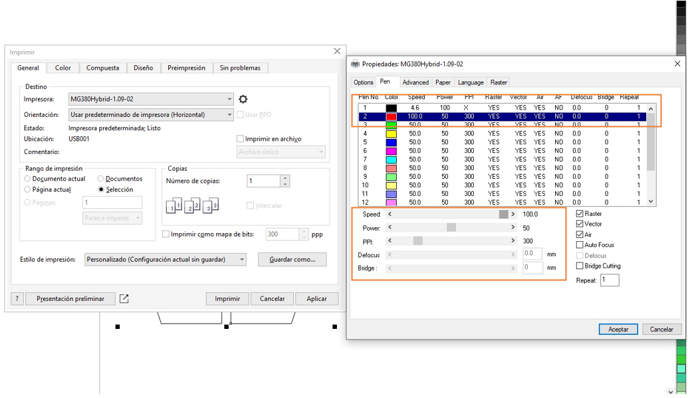If we check the panel of the laser cutter, we’ll see that there is a document and it shows some data such as: File name, speed and power.
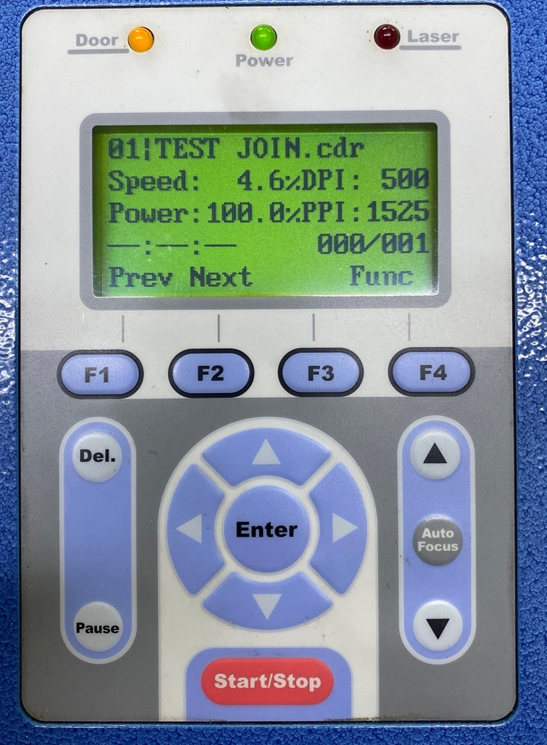Remember to place the material straight and position the cutter head on the material at its origin, (top left of the material). If everything is fine, we give start, and the equipment will start working, it’s important to turn on the purex extractor, remember that the process generates gases.
Video: Corte del pin tester
We have to make 2 pieces to verify that everything is fine.
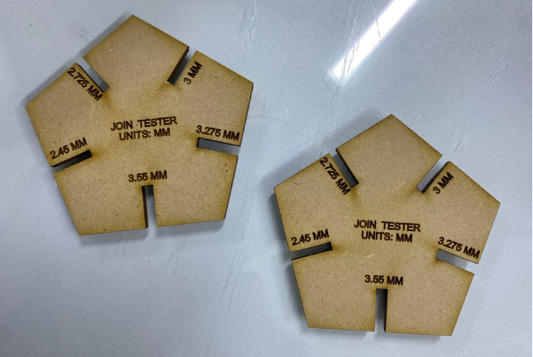This measurement of 2,725mm will be very important in the future, when we manufacture our pieces for the final project, we’ll need the joints to fit perfectly.
I’ll work on the creation of Platonic and Archimedean polyhedrons. For this we need pentagons, For the design we’ll use the online program: cuttle.xyz
First when opening a new project we can find:
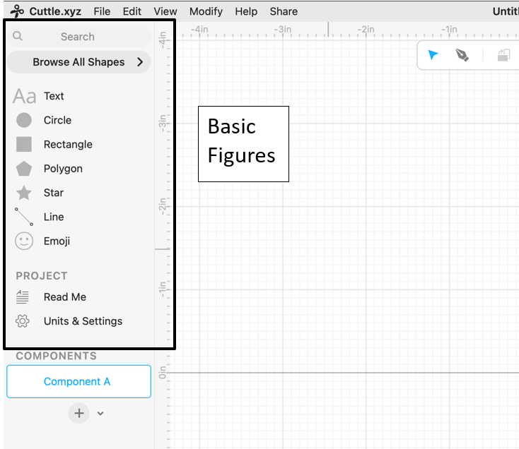To begin with, we need to design the pentagon, but with the condition that the sides of these figures are equal. I want the solids to be 8 mm on each side.
When we draw polygons, the software requires us to indicate the diameter of the circumference where the polygon is inscribed, then we calculate the calculation parameter.
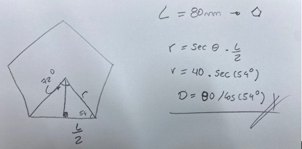The formula to determine the side of the polygon is: L/cos(angle). Now we go to cuttle and start with the first polygon.
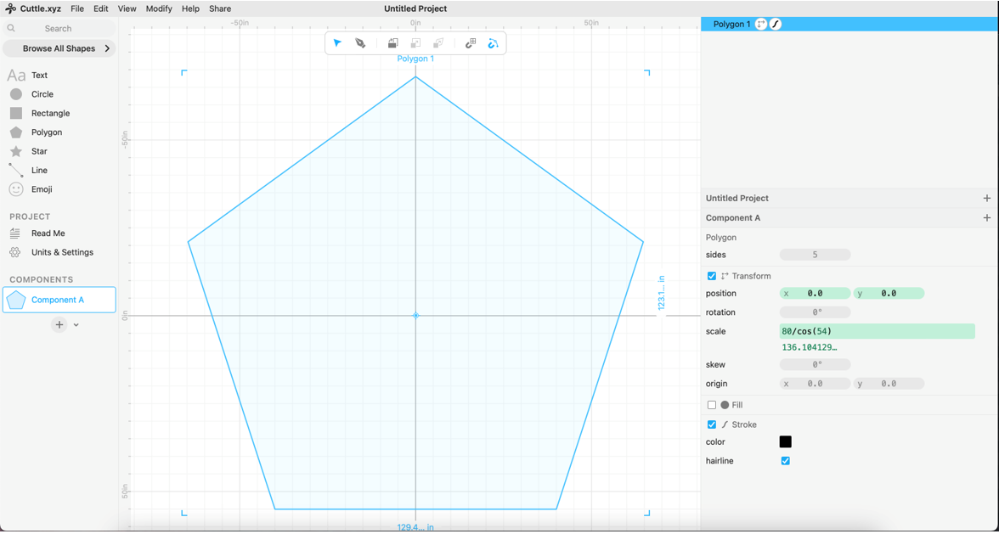Before continuing, we must review the characteristics of the solid, the faces and the angles between the faces of a dodecahedron, which is 12 pentagons at an angle of 116.57.
The joints design is in CONECTORS, the angle is 117 rounded.
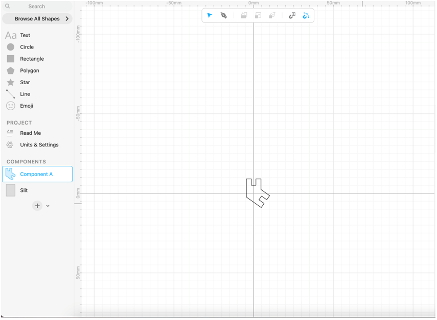The next step was to export the parts in SVG format, and I worked in Corel draw to prepare the designs for the laser cutting process.
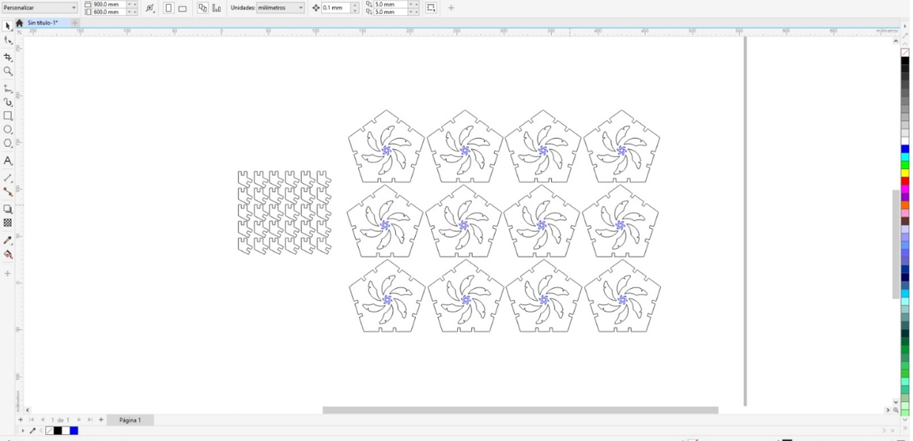For the cutting process, use the following cutting parameters:
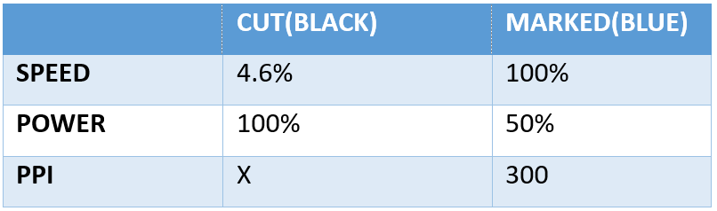We will cut vinyl, with the design of the manta huanca, from the city where I live
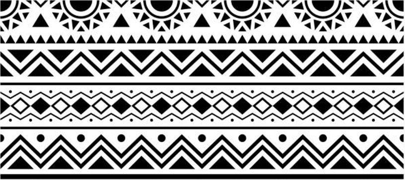First, vectorize the image and for this test we are going to take only a section of the model.
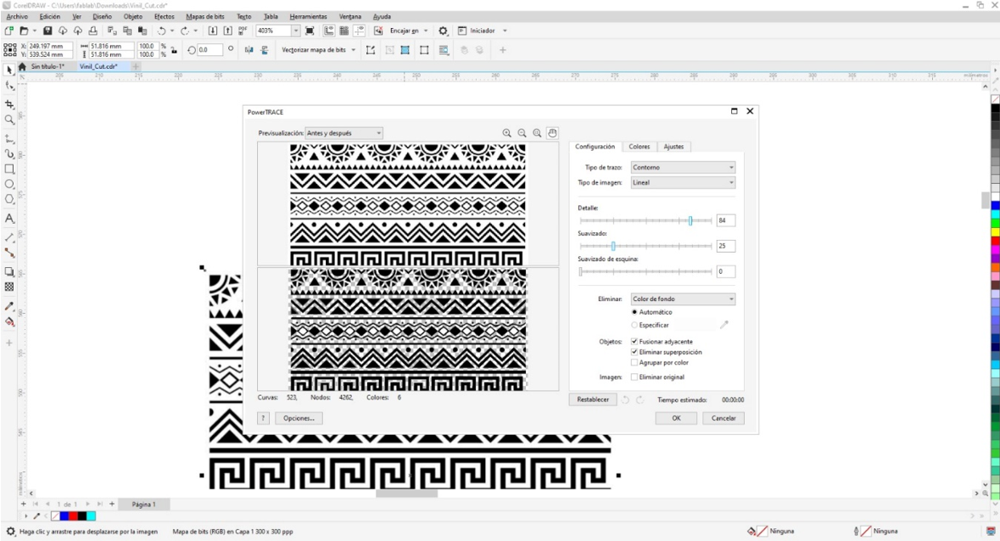We will test the model with some default parameters and reduce the cutting speed due to the amount of details it has.
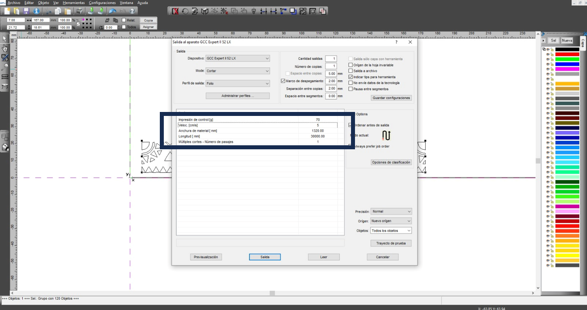and the result was…
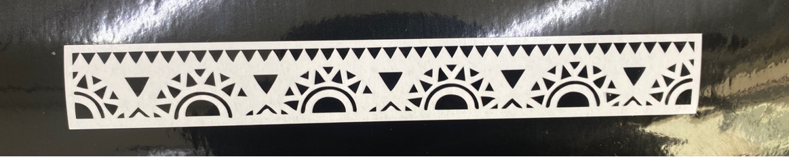I cut the area of the vinyl that was useful to me with scissors, and removed the excess, and on this piece I glued some transfer paper.
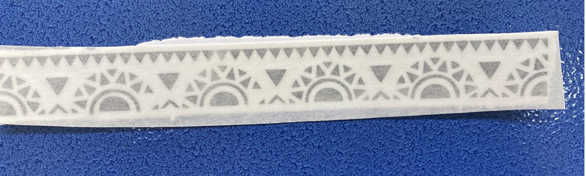Now cut the surplus of the transfer paper, this paper allows you to remove the vinyl from its surface maintaining the distribution and shape, and it looks like a sticker.
Finally, we transfer our work to the destination surface, once pasted, we carefully remove the transfer paper, as if it were a sticker.
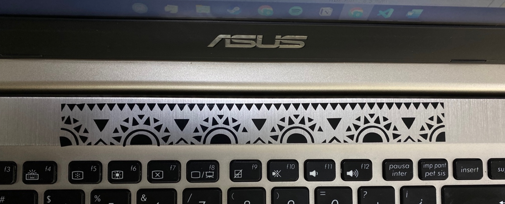Video: Vinylcutter